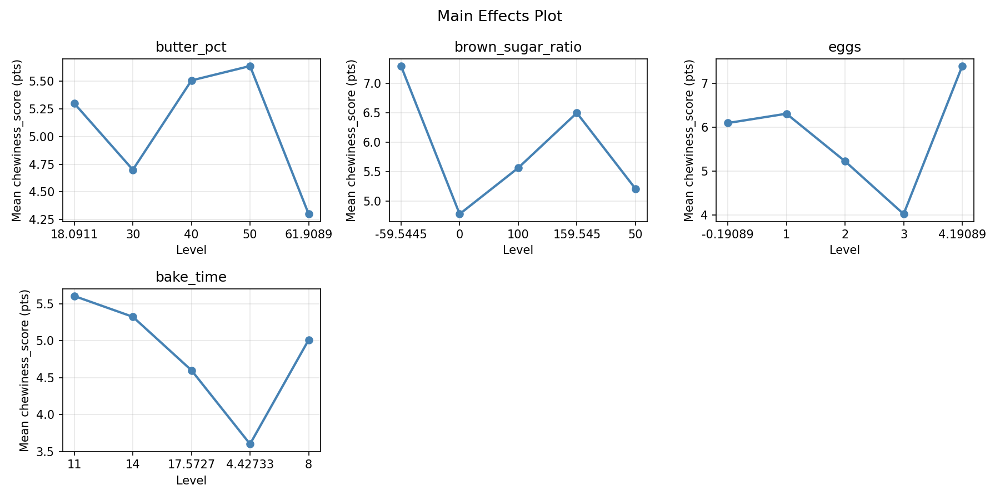
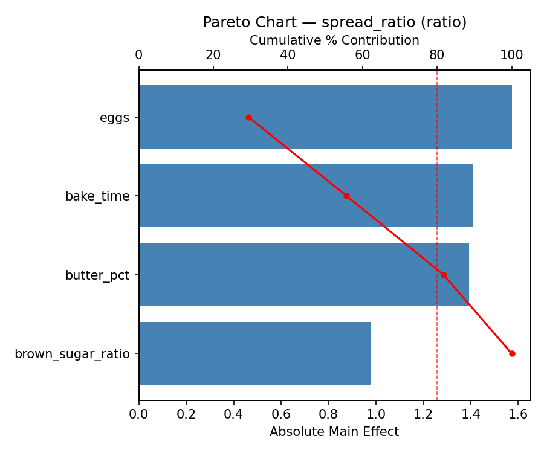
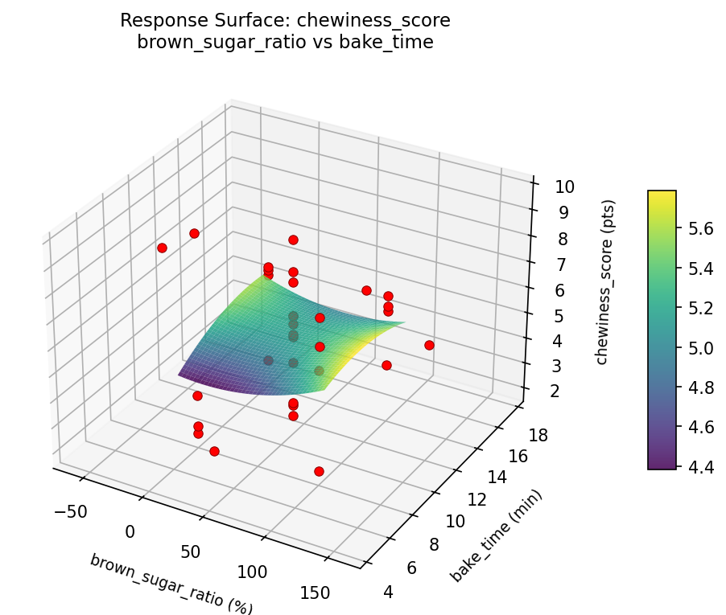
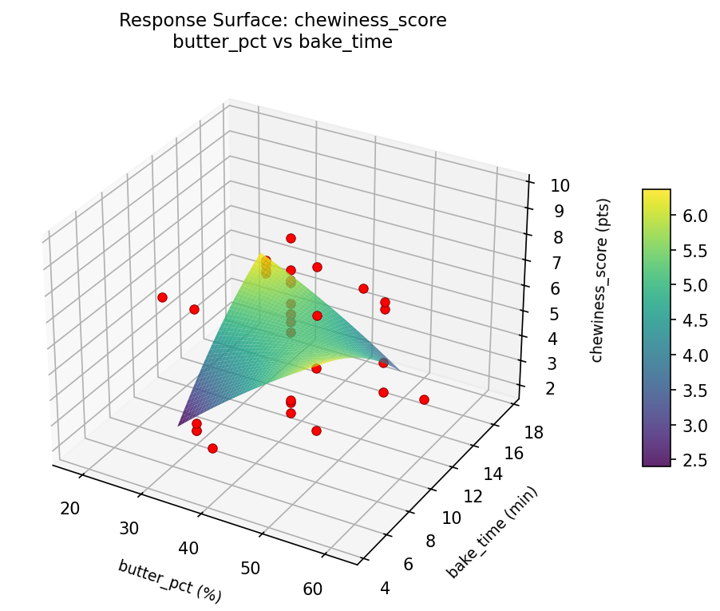
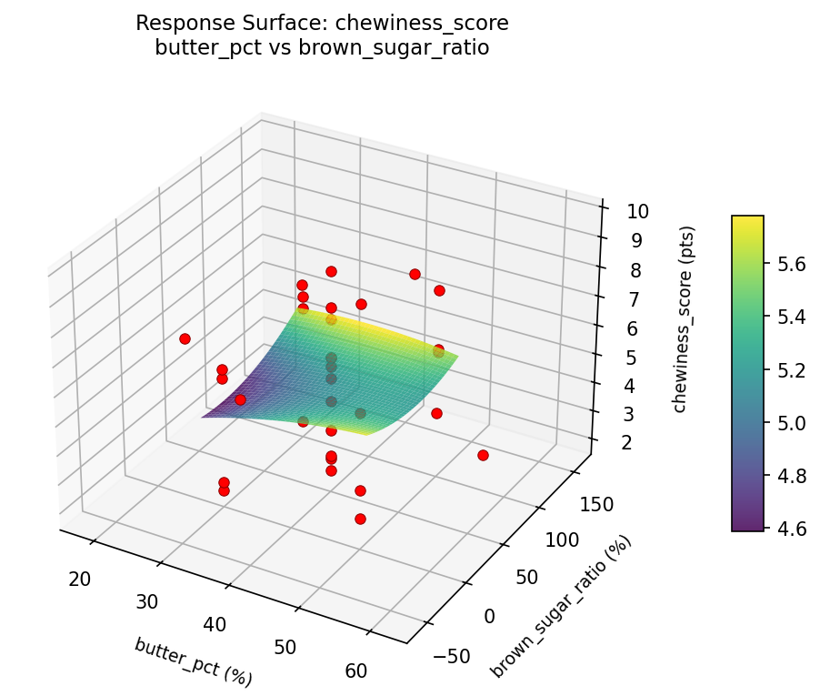
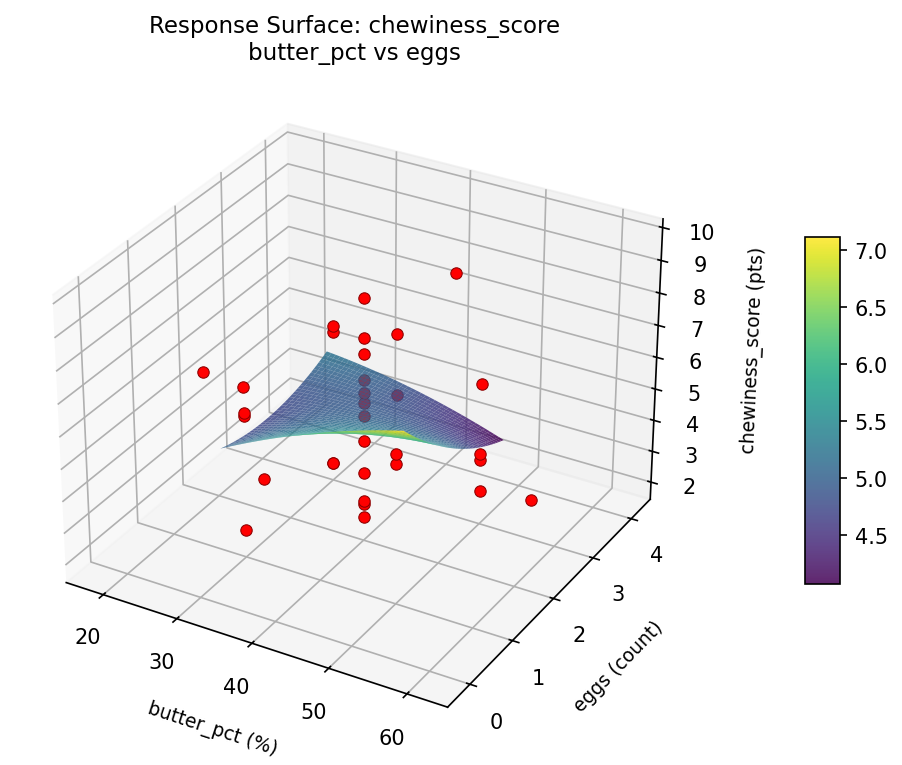
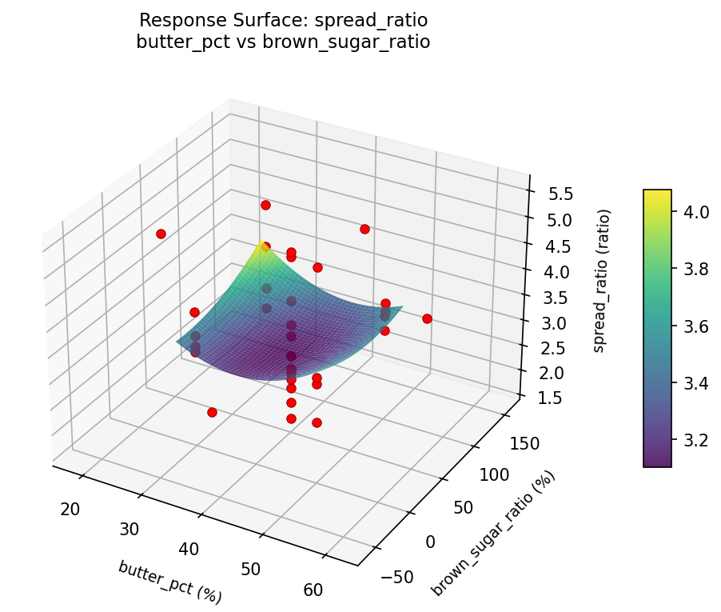
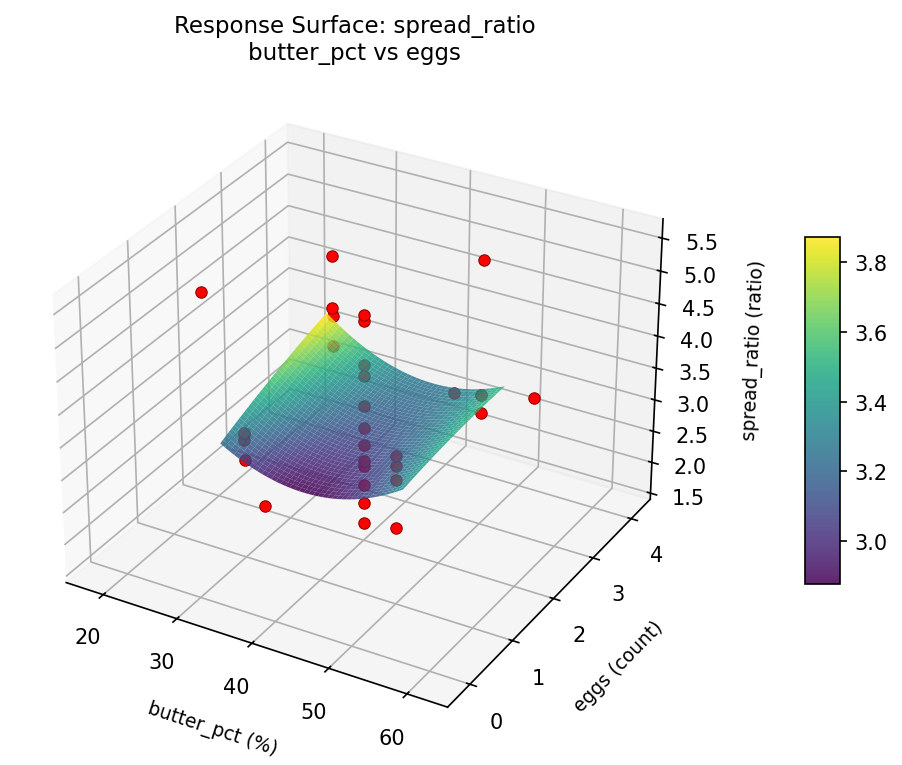

Summary
This experiment investigates cookie texture optimization. Central composite design to control chewiness vs crispness by tuning butter ratio, sugar type blend, egg count, and baking time.
The design varies 4 factors: butter pct (%), ranging from 30 to 50, brown sugar ratio (%), ranging from 0 to 100, eggs (count), ranging from 1 to 3, and bake time (min), ranging from 8 to 14. The goal is to optimize 2 responses: chewiness score (pts) (maximize) and spread ratio (ratio) (maximize). Fixed conditions held constant across all runs include oven temp = 175, flour type = all_purpose.
A Central Composite Design (CCD) was selected to fit a full quadratic response surface model, including curvature and interaction effects. With 4 factors this produces 32 runs including center points and axial (star) points that extend beyond the factorial range.
Quadratic response surface models were fitted to capture potential curvature and factor interactions. The RSM contour plots below visualize how pairs of factors jointly affect each response.
Key Findings
For chewiness score, the most influential factors were eggs (36.5%), brown sugar ratio (27.3%), bake time (21.7%). The best observed value was 9.7 (at butter pct = 30, brown sugar ratio = 100, eggs = 1).
For spread ratio, the most influential factors were eggs (29.4%), bake time (26.3%), butter pct (26.0%). The best observed value was 5.51 (at butter pct = 30, brown sugar ratio = 0, eggs = 3).
Recommended Next Steps
- Run confirmation experiments at the predicted optimal settings to validate the model.
- Consider whether any fixed factors should be varied in a future study.
Experimental Setup
Factors
| Factor | Low | High | Unit |
|---|
butter_pct | 30 | 50 | % |
brown_sugar_ratio | 0 | 100 | % |
eggs | 1 | 3 | count |
bake_time | 8 | 14 | min |
Fixed: oven_temp = 175, flour_type = all_purpose
Responses
| Response | Direction | Unit |
|---|
chewiness_score | ↑ maximize | pts |
spread_ratio | ↑ maximize | ratio |
Configuration
{
"metadata": {
"name": "Cookie Texture Optimization",
"description": "Central composite design to control chewiness vs crispness by tuning butter ratio, sugar type blend, egg count, and baking time"
},
"factors": [
{
"name": "butter_pct",
"levels": [
"30",
"50"
],
"type": "continuous",
"unit": "%"
},
{
"name": "brown_sugar_ratio",
"levels": [
"0",
"100"
],
"type": "continuous",
"unit": "%"
},
{
"name": "eggs",
"levels": [
"1",
"3"
],
"type": "continuous",
"unit": "count"
},
{
"name": "bake_time",
"levels": [
"8",
"14"
],
"type": "continuous",
"unit": "min"
}
],
"fixed_factors": {
"oven_temp": "175",
"flour_type": "all_purpose"
},
"responses": [
{
"name": "chewiness_score",
"optimize": "maximize",
"unit": "pts"
},
{
"name": "spread_ratio",
"optimize": "maximize",
"unit": "ratio"
}
],
"settings": {
"operation": "central_composite",
"test_script": "use_cases/95_cookie_texture/sim.sh"
}
}
Experimental Matrix
The Central Composite Design produces 32 runs. Each row is one experiment with specific factor settings.
| Run | butter_pct | brown_sugar_ratio | eggs | bake_time |
|---|
| 1 | 40 | 50 | 2 | 4.42733 |
| 2 | 30 | 100 | 1 | 14 |
| 3 | 50 | 0 | 3 | 8 |
| 4 | 50 | 100 | 3 | 14 |
| 5 | 40 | 50 | 4.19089 | 11 |
| 6 | 50 | 0 | 3 | 14 |
| 7 | 40 | -59.5445 | 2 | 11 |
| 8 | 30 | 100 | 3 | 8 |
| 9 | 40 | 50 | 2 | 11 |
| 10 | 50 | 100 | 1 | 8 |
| 11 | 40 | 50 | 2 | 11 |
| 12 | 50 | 0 | 1 | 14 |
| 13 | 40 | 50 | 2 | 11 |
| 14 | 50 | 100 | 3 | 8 |
| 15 | 40 | 50 | -0.19089 | 11 |
| 16 | 18.0911 | 50 | 2 | 11 |
| 17 | 40 | 50 | 2 | 11 |
| 18 | 30 | 0 | 1 | 14 |
| 19 | 50 | 100 | 1 | 14 |
| 20 | 40 | 50 | 2 | 11 |
| 21 | 30 | 0 | 3 | 8 |
| 22 | 40 | 50 | 2 | 11 |
| 23 | 61.9089 | 50 | 2 | 11 |
| 24 | 30 | 0 | 3 | 14 |
| 25 | 40 | 50 | 2 | 11 |
| 26 | 30 | 100 | 1 | 8 |
| 27 | 40 | 50 | 2 | 17.5727 |
| 28 | 40 | 50 | 2 | 11 |
| 29 | 50 | 0 | 1 | 8 |
| 30 | 40 | 159.545 | 2 | 11 |
| 31 | 30 | 0 | 1 | 8 |
| 32 | 30 | 100 | 3 | 14 |
Step-by-Step Workflow
1
Preview the design
$ python doe.py info --config use_cases/95_cookie_texture/config.json
2
Generate the runner script
$ python doe.py generate --config use_cases/95_cookie_texture/config.json \
--output use_cases/95_cookie_texture/results/run.sh --seed 42
3
Execute the experiments
$ bash use_cases/95_cookie_texture/results/run.sh
4
Analyze results
$ python doe.py analyze --config use_cases/95_cookie_texture/config.json
5
Get optimization recommendations
$ python doe.py optimize --config use_cases/95_cookie_texture/config.json
6
Generate the HTML report
$ python doe.py report --config use_cases/95_cookie_texture/config.json \
--output use_cases/95_cookie_texture/results/report.html
Features Exercised
| Feature | Value |
|---|
| Design type | central_composite |
| Factor types | continuous (all 4) |
| Arg style | double-dash |
| Responses | 2 (chewiness_score ↑, spread_ratio ↑) |
| Total runs | 32 |
Analysis Results
Generated from actual experiment runs using the DOE Helper Tool.
Response: chewiness_score
Top factors: eggs (36.5%), brown_sugar_ratio (27.3%), bake_time (21.7%).
Pareto Chart

Main Effects Plot

Response: spread_ratio
Top factors: eggs (29.4%), bake_time (26.3%), butter_pct (26.0%).
Pareto Chart

Main Effects Plot

Response Surface Plots
3D surfaces fitted with quadratic RSM. Red dots are observed data points.
chewiness score brown sugar ratio vs bake time

chewiness score brown sugar ratio vs eggs

chewiness score butter pct vs bake time

chewiness score butter pct vs brown sugar ratio

chewiness score butter pct vs eggs

chewiness score eggs vs bake time

spread ratio brown sugar ratio vs bake time

spread ratio brown sugar ratio vs eggs

spread ratio butter pct vs bake time

spread ratio butter pct vs brown sugar ratio

spread ratio butter pct vs eggs

spread ratio eggs vs bake time

Full Analysis Output
RSM surface: rsm_chewiness_score_butter_pct_vs_brown_sugar_ratio.png
RSM surface: rsm_chewiness_score_butter_pct_vs_eggs.png
RSM surface: rsm_chewiness_score_butter_pct_vs_bake_time.png
RSM surface: rsm_chewiness_score_brown_sugar_ratio_vs_eggs.png
RSM surface: rsm_chewiness_score_brown_sugar_ratio_vs_bake_time.png
RSM surface: rsm_chewiness_score_eggs_vs_bake_time.png
RSM surface: rsm_spread_ratio_butter_pct_vs_brown_sugar_ratio.png
RSM surface: rsm_spread_ratio_butter_pct_vs_eggs.png
RSM surface: rsm_spread_ratio_butter_pct_vs_bake_time.png
RSM surface: rsm_spread_ratio_brown_sugar_ratio_vs_eggs.png
RSM surface: rsm_spread_ratio_brown_sugar_ratio_vs_bake_time.png
RSM surface: rsm_spread_ratio_eggs_vs_bake_time.png
=== Main Effects: chewiness_score ===
Factor Effect Std Error % Contribution
--------------------------------------------------------------
eggs 3.3750 0.3706 36.5%
brown_sugar_ratio 2.5250 0.3706 27.3%
bake_time 2.0071 0.3706 21.7%
butter_pct 1.3375 0.3706 14.5%
=== Summary Statistics: chewiness_score ===
butter_pct:
Level N Mean Std Min Max
------------------------------------------------------------
18.0911 1 5.3000 0.0000 5.3000 5.3000
30 8 4.7000 2.1719 2.0000 6.8000
40 14 5.5071 2.1080 2.2000 9.0000
50 8 5.6375 2.3934 2.5000 9.7000
61.9089 1 4.3000 0.0000 4.3000 4.3000
brown_sugar_ratio:
Level N Mean Std Min Max
------------------------------------------------------------
-59.5445 1 7.3000 0.0000 7.3000 7.3000
0 8 4.7750 2.6709 2.0000 9.7000
100 8 5.5625 1.8601 2.0000 7.9000
159.545 1 6.5000 0.0000 6.5000 6.5000
50 14 5.2071 2.0345 2.2000 9.0000
eggs:
Level N Mean Std Min Max
------------------------------------------------------------
-0.19089 1 6.1000 0.0000 6.1000 6.1000
1 8 6.3125 2.1013 2.3000 9.7000
2 14 5.2286 2.0428 2.2000 9.0000
3 8 4.0250 1.8821 2.0000 6.4000
4.19089 1 7.4000 0.0000 7.4000 7.4000
bake_time:
Level N Mean Std Min Max
------------------------------------------------------------
11 14 5.6071 2.0507 2.2000 9.0000
14 8 5.3250 1.4220 2.5000 6.4000
17.5727 1 4.6000 0.0000 4.6000 4.6000
4.42733 1 3.6000 0.0000 3.6000 3.6000
8 8 5.0125 2.9782 2.0000 9.7000
=== Main Effects: spread_ratio ===
Factor Effect Std Error % Contribution
--------------------------------------------------------------
eggs 1.5725 0.1582 29.4%
bake_time 1.4100 0.1582 26.3%
butter_pct 1.3936 0.1582 26.0%
brown_sugar_ratio 0.9800 0.1582 18.3%
=== Summary Statistics: spread_ratio ===
butter_pct:
Level N Mean Std Min Max
------------------------------------------------------------
18.0911 1 4.5700 0.0000 4.5700 4.5700
30 8 3.6963 0.6508 2.9300 4.9600
40 14 3.1764 1.0043 1.6800 4.9100
50 8 3.5900 0.8444 2.5900 5.5100
61.9089 1 4.3900 0.0000 4.3900 4.3900
brown_sugar_ratio:
Level N Mean Std Min Max
------------------------------------------------------------
-59.5445 1 3.1800 0.0000 3.1800 3.1800
0 8 3.6325 0.8547 2.5900 5.5100
100 8 3.6538 0.6419 2.9300 4.9600
159.545 1 4.1600 0.0000 4.1600 4.1600
50 14 3.2921 1.0874 1.6800 4.9100
eggs:
Level N Mean Std Min Max
------------------------------------------------------------
-0.19089 1 3.3100 0.0000 3.3100 3.3100
1 8 3.2538 0.3469 2.5900 3.6900
2 14 3.4043 1.0838 1.6800 4.9100
3 8 4.0325 0.8222 3.1600 5.5100
4.19089 1 2.4600 0.0000 2.4600 2.4600
bake_time:
Level N Mean Std Min Max
------------------------------------------------------------
11 14 3.3471 1.0778 1.6800 4.9100
14 8 3.8625 0.8741 3.1600 5.5100
17.5727 1 3.9900 0.0000 3.9900 3.9900
4.42733 1 2.5800 0.0000 2.5800 2.5800
8 8 3.4238 0.5185 2.5900 4.1600
Pareto chart (chewiness_score): use_cases/95_cookie_texture/results/analysis/pareto_chewiness_score.png
Pareto chart (spread_ratio): use_cases/95_cookie_texture/results/analysis/pareto_spread_ratio.png
Main effects (chewiness_score): use_cases/95_cookie_texture/results/analysis/main_effects_chewiness_score.png
Main effects (spread_ratio): use_cases/95_cookie_texture/results/analysis/main_effects_spread_ratio.png
Optimization Recommendations
=== Optimization: chewiness_score ===
Direction: maximize
Best observed run: #14
butter_pct = 30
brown_sugar_ratio = 100
eggs = 1
bake_time = 14
Value: 9.7
RSM Model (linear, R² = 0.0622, Adj R² = -0.0767):
Coefficients:
intercept +5.2937
butter_pct -0.4761
brown_sugar_ratio +0.2293
eggs +0.2037
bake_time +0.1021
RSM Model (quadratic, R² = 0.4857, Adj R² = 0.0622):
Coefficients:
intercept +6.3006
butter_pct -0.4761
brown_sugar_ratio +0.2293
eggs +0.2037
bake_time +0.1021
butter_pct*brown_sugar_ratio -0.7812
butter_pct*eggs +0.7062
butter_pct*bake_time +0.2312
brown_sugar_ratio*eggs +0.2313
brown_sugar_ratio*bake_time +1.0813
eggs*bake_time -0.2063
butter_pct^2 -0.5881
brown_sugar_ratio^2 -0.0256
eggs^2 -0.2547
bake_time^2 -0.3902
Curvature analysis:
butter_pct coef=-0.5881 concave (has a maximum)
bake_time coef=-0.3902 concave (has a maximum)
eggs coef=-0.2547 concave (has a maximum)
brown_sugar_ratio coef=-0.0256 negligible curvature
Notable interactions:
brown_sugar_ratio*bake_time coef=+1.0813 (synergistic)
butter_pct*brown_sugar_ratio coef=-0.7812 (antagonistic)
butter_pct*eggs coef=+0.7062 (synergistic)
Predicted optimum (from quadratic model):
butter_pct = 30
brown_sugar_ratio = 100
eggs = 1
bake_time = 14
Predicted value: 7.9583
Model quality: Weak fit — consider adding center points or using a different design.
Factor importance:
1. butter_pct (effect: 3.9, contribution: 37.1%)
2. brown_sugar_ratio (effect: 3.3, contribution: 31.2%)
3. bake_time (effect: 1.7, contribution: 16.7%)
4. eggs (effect: 1.6, contribution: 15.1%)
=== Optimization: spread_ratio ===
Direction: maximize
Best observed run: #12
butter_pct = 30
brown_sugar_ratio = 0
eggs = 3
bake_time = 8
Value: 5.51
RSM Model (linear, R² = 0.0449, Adj R² = -0.0966):
Coefficients:
intercept +3.4912
butter_pct -0.0609
brown_sugar_ratio -0.0137
eggs +0.1454
bake_time +0.1361
RSM Model (quadratic, R² = 0.4959, Adj R² = 0.0808):
Coefficients:
intercept +2.9913
butter_pct -0.0609
brown_sugar_ratio -0.0137
eggs +0.1454
bake_time +0.1361
butter_pct*brown_sugar_ratio +0.3188
butter_pct*eggs -0.0888
butter_pct*bake_time +0.2950
brown_sugar_ratio*eggs -0.3900
brown_sugar_ratio*bake_time -0.0488
eggs*bake_time +0.3313
butter_pct^2 +0.1542
brown_sugar_ratio^2 +0.0823
eggs^2 +0.1073
bake_time^2 +0.2812
Curvature analysis:
bake_time coef=+0.2812 convex (has a minimum)
butter_pct coef=+0.1542 convex (has a minimum)
eggs coef=+0.1073 convex (has a minimum)
brown_sugar_ratio coef=+0.0823 negligible curvature
Notable interactions:
brown_sugar_ratio*eggs coef=-0.3900 (antagonistic)
eggs*bake_time coef=+0.3313 (synergistic)
butter_pct*brown_sugar_ratio coef=+0.3188 (synergistic)
Predicted optimum (from quadratic model):
butter_pct = 30
brown_sugar_ratio = 0
eggs = 3
bake_time = 14
Predicted value: 4.8549
Model quality: Weak fit — consider adding center points or using a different design.
Factor importance:
1. brown_sugar_ratio (effect: 1.6, contribution: 32.1%)
2. bake_time (effect: 1.4, contribution: 28.3%)
3. eggs (effect: 1.1, contribution: 22.9%)
4. butter_pct (effect: 0.8, contribution: 16.7%)